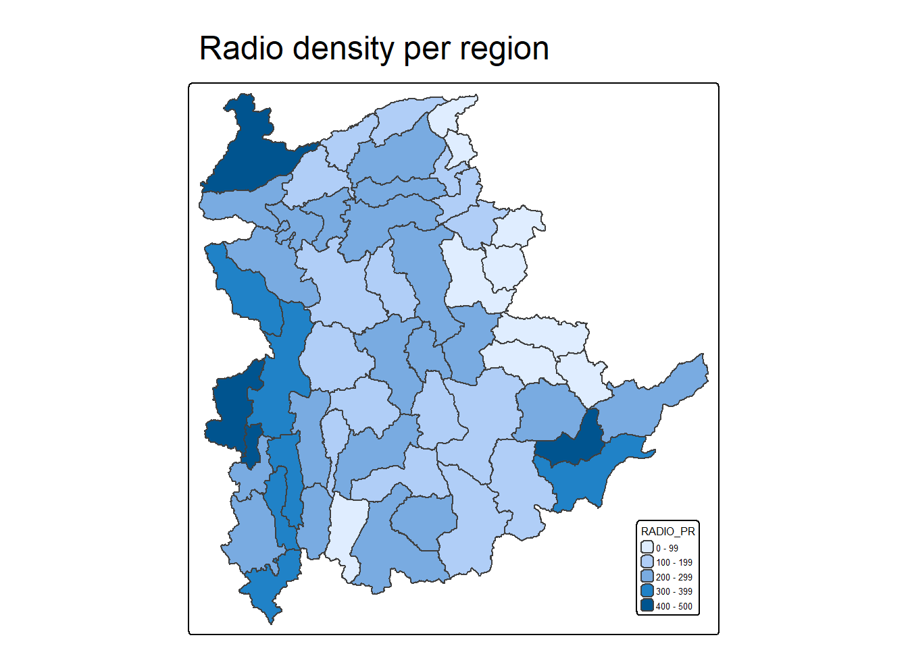
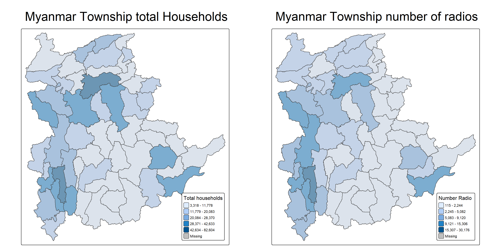

This exercise provides practical experience in delineating homogeneous regions from multivariate spatial data using two key methods: hierarchical clustering and spatially constrained clustering.
In this practical session, we will learn how to:
Import and convert GIS polygons to sf data frames and SpatialPolygonsDataFrame objects.
Run hierarchical clustering with hclust().
Implement spatially constrained clustering with spdep::skater().
Create thematic maps and diagnostic plots using tmap and ggplot2.
The Analytical Question
Regional delineation using multivariate spatial data is a core task in market analysis and spatial policy. Here, we aim to partition Shan State, Myanmar, into homogeneous regions using six household ICT ownership indicators: Radio, Television, Landline phone, Mobile phone, Computer, and Home internet access.
The data
Two data sets will be used in this study. They are:
Myanmar Township Boundary Data (i.e. myanmar_township_boundaries) : This is a GIS data in ESRI shapefile format. It consists of township boundary information of Myanmar. The spatial data are captured in polygon features.
District Pcode District Name Township Pcode Township Name
Length :55 Length :55 Length :55 Length :55
N.unique :14 N.unique :14 N.unique :55 N.unique :55
N.blank : 0 N.blank : 0 N.blank : 0 N.blank : 0
Min.nchar:10 Min.nchar: 4 Min.nchar: 9 Min.nchar: 4
Max.nchar:10 Max.nchar: 9 Max.nchar: 9 Max.nchar:10
Total households Radio Television Land line phone
Min. : 3318 Min. : 115 Min. : 728 Min. : 20.0
1st Qu.: 8711 1st Qu.: 1260 1st Qu.: 3744 1st Qu.: 266.5
Median :13685 Median : 2497 Median : 6117 Median : 695.0
Mean :18369 Mean : 4487 Mean :10183 Mean : 929.9
3rd Qu.:23471 3rd Qu.: 6192 3rd Qu.:13906 3rd Qu.:1082.5
Max. :82604 Max. :30176 Max. :62388 Max. :6736.0
Mobile phone Computer Internet at home
Min. : 150 Min. : 20.0 Min. : 8.0
1st Qu.: 2037 1st Qu.: 121.0 1st Qu.: 88.0
Median : 3559 Median : 244.0 Median : 316.0
Mean : 6470 Mean : 575.5 Mean : 760.2
3rd Qu.: 7177 3rd Qu.: 507.0 3rd Qu.: 630.5
Max. :48461 Max. :6705.0 Max. :9746.0
Derive new variables using dplyr package
Because the raw variables represent total counts of households, using them directly introduces size bias. Townships with larger overall populations will naturally record higher numbers of households owning radios, TVs, and other devices. To control for population scale, we normalize each indicator by calculating its household penetration rate.
ict_derived <- ict %>%mutate(`RADIO_PR`=`Radio`/`Total households`*1000) %>%mutate(`TV_PR`=`Television`/`Total households`*1000) %>%mutate(`LLPHONE_PR`=`Land line phone`/`Total households`*1000) %>%mutate(`MPHONE_PR`=`Mobile phone`/`Total households`*1000) %>%mutate(`COMPUTER_PR`=`Computer`/`Total households`*1000) %>%mutate(`INTERNET_PR`=`Internet at home`/`Total households`*1000) %>%rename(`DT_PCODE`=`District Pcode`,`DT`=`District Name`,`TS_PCODE`=`Township Pcode`, `TS`=`Township Name`,`TT_HOUSEHOLDS`=`Total households`,`RADIO`=`Radio`, `TV`=`Television`, `LLPHONE`=`Land line phone`, `MPHONE`=`Mobile phone`,`COMPUTER`=`Computer`, `INTERNET`=`Internet at home`)
Review the summary statistics of the newly derived penetration rates
summary(ict_derived)
DT_PCODE DT TS_PCODE TS TT_HOUSEHOLDS
Length :55 Length :55 Length :55 Length :55 Min. : 3318
N.unique :14 N.unique :14 N.unique :55 N.unique :55 1st Qu.: 8711
N.blank : 0 N.blank : 0 N.blank : 0 N.blank : 0 Median :13685
Min.nchar:10 Min.nchar: 4 Min.nchar: 9 Min.nchar: 4 Mean :18369
Max.nchar:10 Max.nchar: 9 Max.nchar: 9 Max.nchar:10 3rd Qu.:23471
Max. :82604
RADIO TV LLPHONE MPHONE
Min. : 115 Min. : 728 Min. : 20.0 Min. : 150
1st Qu.: 1260 1st Qu.: 3744 1st Qu.: 266.5 1st Qu.: 2037
Median : 2497 Median : 6117 Median : 695.0 Median : 3559
Mean : 4487 Mean :10183 Mean : 929.9 Mean : 6470
3rd Qu.: 6192 3rd Qu.:13906 3rd Qu.:1082.5 3rd Qu.: 7177
Max. :30176 Max. :62388 Max. :6736.0 Max. :48461
COMPUTER INTERNET RADIO_PR TV_PR
Min. : 20.0 Min. : 8.0 Min. : 21.05 Min. :116.0
1st Qu.: 121.0 1st Qu.: 88.0 1st Qu.:138.95 1st Qu.:450.2
Median : 244.0 Median : 316.0 Median :210.95 Median :517.2
Mean : 575.5 Mean : 760.2 Mean :215.68 Mean :509.5
3rd Qu.: 507.0 3rd Qu.: 630.5 3rd Qu.:268.07 3rd Qu.:606.4
Max. :6705.0 Max. :9746.0 Max. :484.52 Max. :842.5
LLPHONE_PR MPHONE_PR COMPUTER_PR INTERNET_PR
Min. : 2.78 Min. : 36.42 Min. : 3.278 Min. : 1.041
1st Qu.: 22.84 1st Qu.:190.14 1st Qu.:11.832 1st Qu.: 8.617
Median : 37.59 Median :305.27 Median :18.970 Median : 22.829
Mean : 51.09 Mean :314.05 Mean :24.393 Mean : 30.644
3rd Qu.: 69.72 3rd Qu.:428.43 3rd Qu.:29.897 3rd Qu.: 41.281
Max. :181.49 Max. :735.43 Max. :92.402 Max. :117.985
3. Exploratory Data Analysis (EDA)
3.1 EDA using statistical graphics
Using histogram to identify the overall distribution of the data values
Before constructing the choropleth map, we must join the spatial dataset (shan_sf) with the aspatial attribute table (ict_derived). We will use dplyr’s left_join(), keeping shan_sf as the base simple feature data frame and appending ict_derived as the join table using the unique identifier TS_PCODE. The code chunk below executes this operation.
The data fields from ict_derived data frame are now updated into the data frame of shan_sf.
shan_sf <-read_rds("data/rds/shan_sf.rds")
3.2.2 Preparing a choropleth map
Use choropleth map to have a quick look at the distribution of Radio penetration rate of Shan State at township level
# qtm(shan_sf, "RADIO_PR")#| fig-width: 12#| fig-height: 8tm_shape(shan_sf) +tm_polygons(fill ="RADIO_PR") +tm_title("Radio density per region", size =1.5) +tm_layout(legend.position =c("right", "bottom"),legend.text.size =0.4,legend.title.size =0.5)

Note
Be noted that the original script from prof is not working due to the data field name is not correct (‘RADIO_PR’ instead of ‘RADIO_PR.y’). We need to verify the field name of the data and correct it accordingly.
To demonstrate that the spatial patterns in the previous choropleth map are biased by township population size, we construct two comparative choropleth maps using the code chunk below: one displaying the total number of households (TT_HOUSEHOLDS.map) and the other showing households owning radios (RADIO.map).
TT_HOUSEHOLDS.map <-tm_shape(shan_sf) +tm_fill(col ="TT_HOUSEHOLDS",n =5,style ="jenks", title ="Total households") +tm_borders(alpha =0.5) +tm_title("Myanmar Township total Households", size =2.5) +tm_layout(legend.position =c("right", "bottom"),legend.text.size =0.7,legend.title.size =1)RADIO.map <-tm_shape(shan_sf) +tm_fill(col ="RADIO",n =5,style ="jenks",title ="Number Radio ") +tm_borders(alpha =0.5) +tm_title("Myanmar Township number of radios", size =2.5) +tm_layout(legend.position =c("right", "bottom"),legend.text.size =0.7,legend.title.size =1)tmap_arrange(TT_HOUSEHOLDS.map, RADIO.map,asp=NA, ncol=2)

Notice that the choropleth maps above confirm this pattern: townships with larger household populations naturally exhibit higher absolute numbers of radio owners. To control for this population scale effect, we now plot side-by-side choropleth maps comparing the total number of households against the actual radio penetration rate.
We can see that there are some regions that the radio own rate are extremely high despite of the number of house holds in the township is quite low.
4. Correlation Analysis
Before performing cluster analysis, it is essential to ensure that the input variables are not highly correlated, as multicollinearity can disproportionately weight overlapping dimensions. In this section, you will learn how to use the corrplot.mixed() function from the corrplot package to visualize and evaluate the correlation structure among the variables.
The correlation plot above shows that COMPUTER_PR and INTERNET_PR are highly correlated. This suggest that only one of them should be used in the cluster analysis instead of both.
5. Hierarchy Cluster Analysis
5.1 Extracting clustering variables
Extract the clustering variables from the shan_sf simple feature object into data.frame.
Notice that INTERNET_PR.y has been excluded from the final clustering variables due to its high correlation with COMPUTER_PR.y, preventing redundancy in the distance matrix. Next, we set the township names as row identifiers instead of relying on default row indices.
original script from prof: shan_ict <- read_rds(“chap12/data/rds/shan_ict.rds”)
I assume this script is to save, not to read so i changed the script to save_rds
5.2 Data Standardisation
Because cluster analysis typically incorporates multiple variables measured on disparate scales, variables with larger magnitudes or wider ranges can disproportionately dominate distance calculations. To prevent this bias, it is standard practice to standardise the input variables before running the cluster analysis.
5.3 Min-Max standardisation
In the code chunk below, the normalize() function from the heatmaply package is used to standardise the clustering variables via the Min-Max scaling method. The summary() function is then called to inspect the summary statistics of the rescaled variables.
RADIO_PR TV_PR LLPHONE_PR MPHONE_PR
Min. :0.0000 Min. :0.0000 Min. :0.0000 Min. :0.0000
1st Qu.:0.2544 1st Qu.:0.4600 1st Qu.:0.1123 1st Qu.:0.2199
Median :0.4097 Median :0.5523 Median :0.1948 Median :0.3846
Mean :0.4199 Mean :0.5416 Mean :0.2703 Mean :0.3972
3rd Qu.:0.5330 3rd Qu.:0.6750 3rd Qu.:0.3746 3rd Qu.:0.5608
Max. :1.0000 Max. :1.0000 Max. :1.0000 Max. :1.0000
COMPUTER_PR
Min. :0.00000
1st Qu.:0.09598
Median :0.17607
Mean :0.23692
3rd Qu.:0.29868
Max. :1.00000